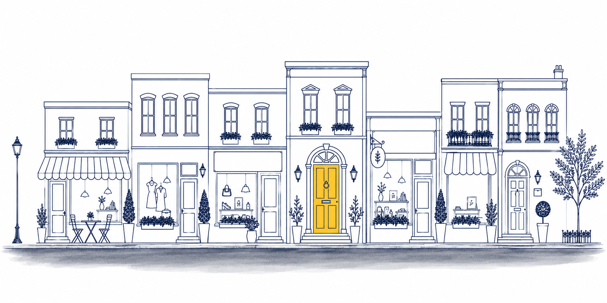
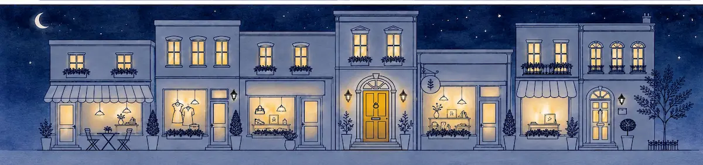
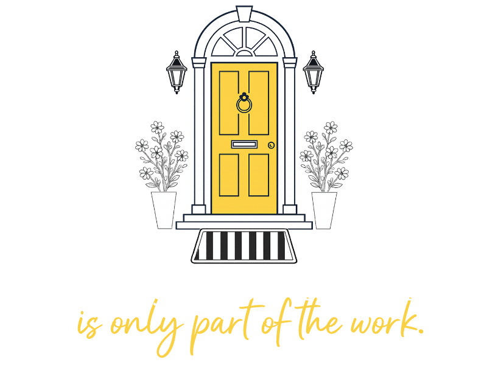

Most small businesses spend a lot of time, money, and energy trying to stay visible and attract new customers.
But getting someone's attention is only the first step.
Once someone visits your website, checks your Google profile, sends a message, or opens that first email, they are looking for signs that they are in the right place. They want to understand what you offer, what to do next, and whether the business in front of them feels clear, current, and trustworthy.
That is a lot to keep up with when you are also running the actual business.
The Yellow Front Door helps take some of that pressure off. We shape the customer-facing pieces people meet along the way, keep them current as your business changes, and help your marketing grow from a stronger place.
Once the experience is working, the rest of your marketing can do more. Then we can help you build from there.
What we work on
Five connected parts of the customer-facing experience. You can start with one and build across all of them, or we can look together and figure out where to begin.
Running a business means keeping a lot of plates spinning at once. If you are not sure which part of your customer-facing experience needs attention first, that is completely normal — and it is exactly what the Drive-By is for.
Send us your website and a couple of places your business shows up online. We will take a short, honest look and tell you what we see. No pitch, no pressure. Just another set of eyes helping you get a clearer picture of where things stand.
Grab a coffee and let's chat. The door is always open.
Request your Drive-ByFree · No pitch · No commitment